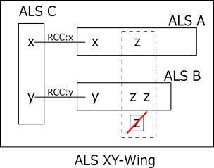
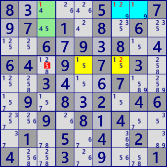

●ALS XY-Wing
ALS XY-Wingは3つのALSを用いる解析アルゴリズムです。
次のALS Chainの3ALSの場合です。
ALS A、B、Cについて、AとCにはRCC xがあり、BとCにはRCC yがあるとします。さらにAとBにはともに数字ｚがあるとします。
この状態で、A、B内の全てのzと関係する(同じhouseに属する)zがALS外にあるとき、このｚは除外できます。
もしもALS外のzが真とすると、ALS A、BはLockedSetになり(xはAに、yはBに含まれる）、
ALS Cではセル数に対し候補数字が足りなくなります。
ALSを用いる解析アルゴリズムの特徴として、ALSが利用できる場面では、多くの場合に同時に多数の解が存在します。
また、ALS系の他の解析アルゴリズム解も存在します。ALS XY-Wingでもその性質があります。

ALS XY-Wingの例です。

8....5..7.7.1.8.6...6.9.8..64.9.7.3...3...7...9.8.2.46..9.8.4...1.5.4.2.4..3....1
4..1....39.7.3.54..539..7....5...3..2963.7154..8...6....4..389..39.4.2.56....9..7
○ALS XY-Wing解析プログラム
ALS XY-Wingのサイズは、3つのALSのサイズの合計とし、これの小さい順に探します。
また、ALSはサイズ順に並べてあり、探索の打切りに利用しています。
ALS XY-Wingの探索は次の手順で行います。
- 軸となるALS（図のALS C)を設定する。
- 2つのALSを組合せで選ぶ（ALS A,ALS Bとする)。
- ALS Aの条件(Cと異なる、サイズ条件）を調べる。不適なら、スキップ付で次の組合せ選択に進む。
- ALS A-CのRCCを求める。組合せで前回のALS A-Cと同じなら、RCC算出は省略する。
- ALS Bの条件(Cと異なる、サイズ条件、ABは重ならない）を調べる。不適なら、スキップ付で次の組合せ選択に進む。
- ALS B-CのRCCを求める。B-CのRCCはA-CのRCCと異なる。
- ALS A,BのRCC以外の候補数字zについて、ALS外にALS内の全てのzをカバーするセルを探す。
public partial class ALSTechGen: AnalyzerBaseV2{
public bool ALS_XY_Wing( ){
ALSMan.ALS_Search(1);
if( ALSMan.ALSLst==null || ALSMan.ALSLst.Count<=2 ) return false;
for( int szT=4; szT<15; szT++ ){ //3ALSのサイズ合計の小さい順に探索
if( _ALSXYWingSub(szT) ) return true;
}
return false;
}
private bool _ALSXYWingSub( int szT ){
//(ALSはサイズ順にSort済み)
foreach( var UC in ALSMan.ALSLst.Where(p=>p.Size<=szT-2) ){
if( !UC.singly ) continue;
int szS=szT-UC.Size;
UALS UA, UB, UApre=null;
int nxt=0, RccAC=-1, RccBC=-1;
var cmb = new Combination(ALSMan.ALSLst.Count,2);
while( cmb.Successor(nxt) ){
nxt=0;
UA = ALSMan.ALSLst[cmb.Cmb[0]];
if( !UA.singly || UA==UC || UA.Size>szS-1 ) continue;
if( UA!=UApre ){
RccAC = ALSMan.GetALSRCC(UA,UC); //RCC
if( RccAC.BitCount()!=1 ) continue;
UApre=UA;
}
UB = ALSMan.ALSLst[cmb.Cmb[1]];
if( !UB.singly || UB.Size>(szS-UA.Size) ) continue; //"サイズ順"を利用したスキップ
nxt=1;
if( UB==UC || UB.Size!=(szS-UA.Size) ) continue;
if( !(UA.B81&UB.B81).IsZero() ) continue; //AB範囲が重なる
RccBC = ALSMan.GetALSRCC(UB,UC); //RCC
if( RccBC.BitCount()!=1 ) continue;
if( RccAC==RccBC ) continue;
int EFrB = (UA.FreeB&UB.FreeB).DifSet(RccAC|RccBC);
if( EFrB==0 ) continue;
foreach( var no in EFrB.IEGet_BtoNo() ){
int noB=(1<<no);
Bit81 UE = new Bit81();
foreach( var P in UA.UCellLst.Where(p=>(p.FreeB&noB)>0)) UE.BPSet(P.rc);
foreach( var P in UB.UCellLst.Where(p=>(p.FreeB&noB)>0)) UE.BPSet(P.rc);
Bit81 TBD = ( new Bit81(pBDL,noB)) - (UA.B81|UB.B81|UC.B81);
foreach( var rc in TBD.IEGet_rc() ){
if( !(UE-ConnectedCells[rc]).IsZero() ) continue;
pBDL[rc].CancelB=noB; SolCode=2;
}
if(SolCode>0){ //===== ALS XY-Wing fond =====
ALSXYWing_SolResult(UA,UB,UC, RccAC, RccBC);
if( !AnMan.SnapSaveGP(true) ) return true;
}
}
}
}
return false;
}
private void ALSXYWing_SolResult( UALS UA, UALS UB, UALS UC, int RccAC, int RccBC ){
string st = "ALS XY-Wing ";
if( SolInfoDsp ){
foreach( var P in UA.UCellLst ) P.SetNoBBgColor(RccAC,AttCr,SolBkCr);
foreach( var P in UB.UCellLst ) P.SetNoBBgColor(RccBC,AttCr,SolBkCr2);
foreach( var P in UC.UCellLst ) P.SetNoBBgColor(RccAC|RccBC,AttCr,SolBkCr3);
st += "\r ALS A: "+UA.ToStringRCN();
st += "\r ALS B: "+UB.ToStringRCN();
st += "\r ALS C: "+UC.ToStringRCN();
st += "\r RCC AC: #"+RccAC.ToBitStringN(9);
st += "\r RCC BC: #"+RccBC.ToBitStringN(9);
ResultLong=st;
}
Result = "ALS XY-Wing";
}
}